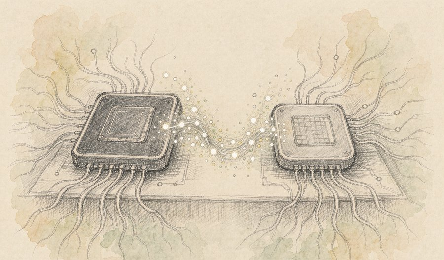
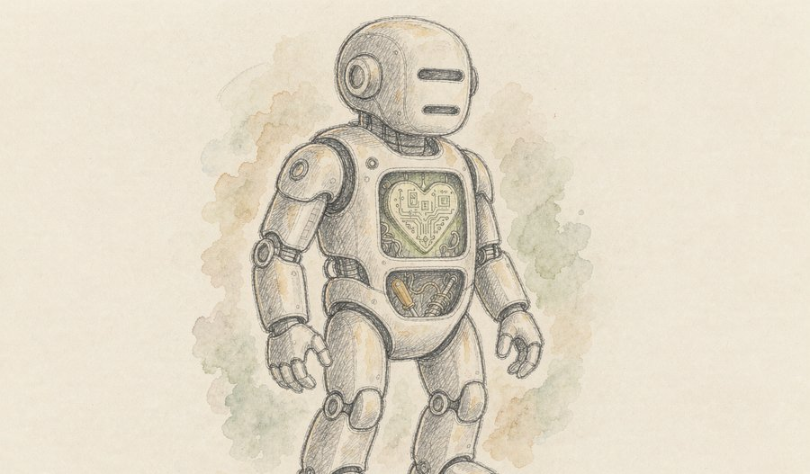
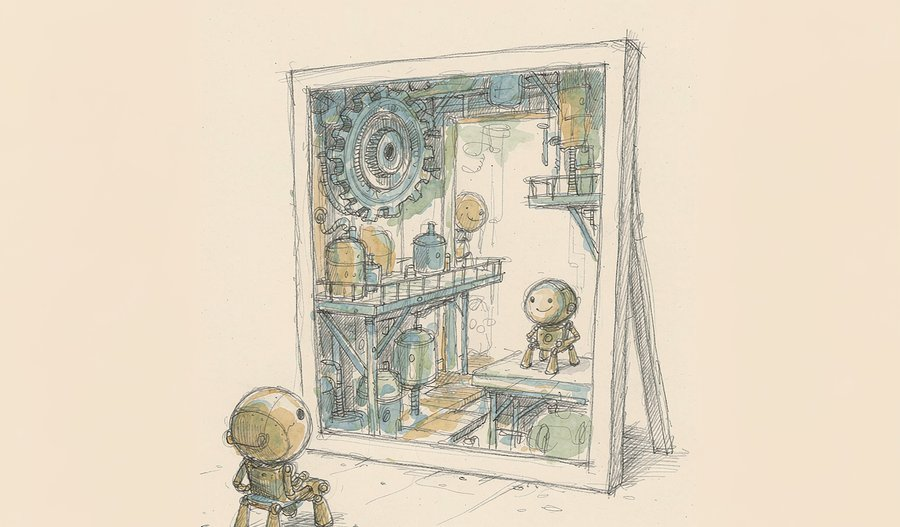
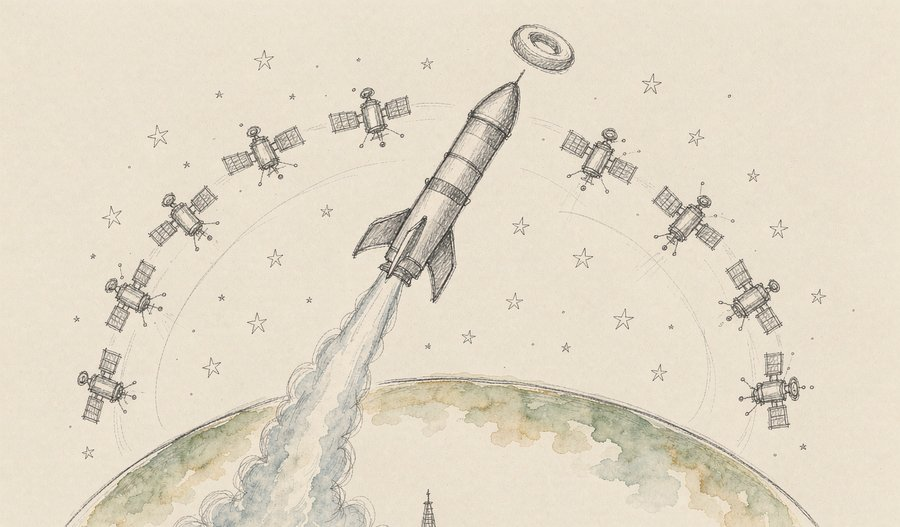
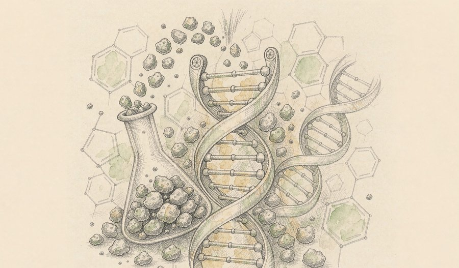
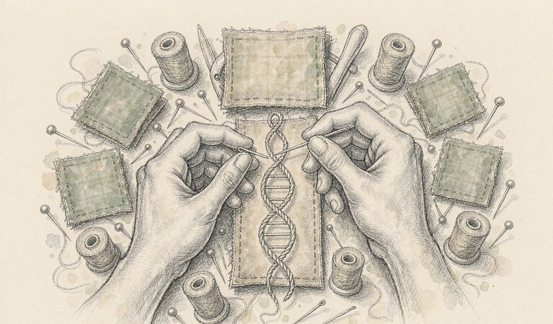
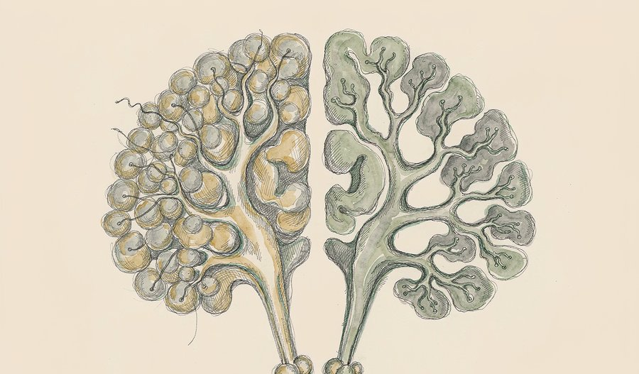
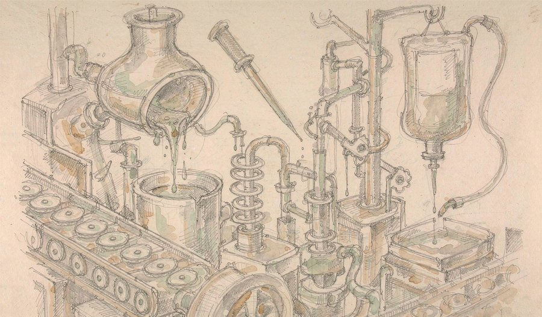
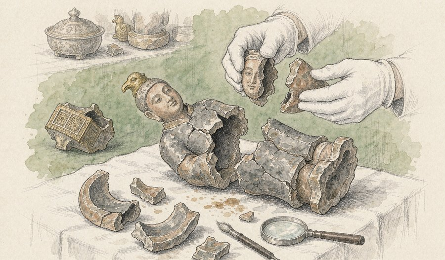
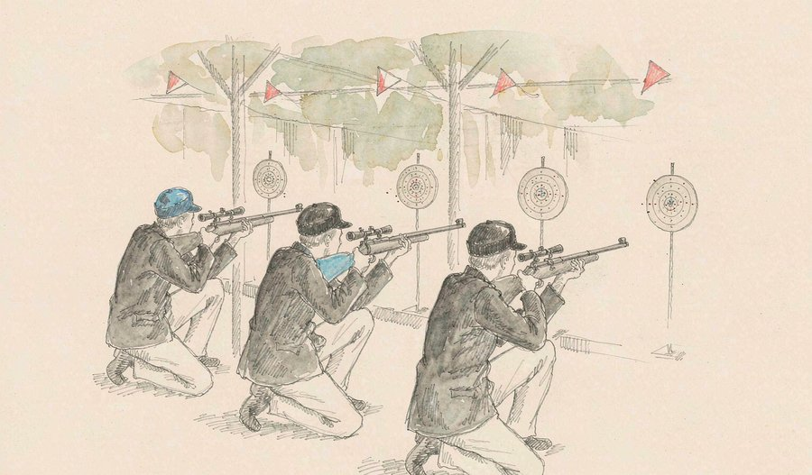

这个周日的世界，各条线都在学着「分工」。芯片把一件事拆给两种脑子去做，火箭把地面机房整个搬上天，而人体自己，也第一次被安排进血小板的流水线。
另一条线是「拆开看」：拆开大脑，发现它原来是两套各自独立的系统；拆开基因编辑，发现整段DNA也能像缝扣子一样一次缝到位。
人文侧同样热闹——昭陵的陶俑在入库半个多世纪后拼回了原样，名古屋的射击场上，三名中国射手把世界纪录往上抬了两环。
十条精选，替你把每一条的来龙去脉垫平了再讲。
今天最重的一条线是「分工」。芯片世界不再执着于一颗万能处理器，而是让GPU与类脑芯片各干最擅长的事；生命科学也在分工——让细胞自己生产药物，让工厂替身体制造血小板。当每个环节都只做最擅长的那一步，整体效率就从系统层面被重新打开了。
01

9月20日，科技日报通报了2026中国算力大会上的一项首发成果：移动云联合中电科南湖研究院、灵汐科技、天数智芯及清华、北大，发布国内首个国产GPU与类脑芯片混合的大模型推理系统。它把大模型的计算拆成两半——注意力计算交给通用GPU，前馈网络交给擅长存算一体的类脑芯片，在DeepSeek V4 Flash上实测，推理输出与能效均提升一倍以上，运营成本下降超40%。
观此：这套方案最妙的不是某颗芯片变强，而是承认了「一种芯片包打天下」的时代结束了。类脑芯片的强项是存算一体、片上大缓存，正好接住最费带宽的那部分计算。它还改写了国产算力的叙事：不追最先进制程，靠系统架构就能把存量GPU「增压」一倍。对已经囤了大批国产卡的算力运营商来说，这是不换机器就能落地的升级。
来源：中国产业经济信息网
02

9月20日，启元机器人在上海举行新品发布会，宣布苏州睿芯成为其算力生态合作伙伴，双方将围绕具身智能端侧算力展开合作，推进RISC-V指令集加数据流架构的AI芯片在人形机器人上落地。睿芯自研的RISC-V CPU内核已通过国际半导体巨头的技术认证，进入其全球采购体系。
观此：机器人每看一眼、每迈一步，都要在毫秒级内完成感知与决策，端侧芯片必须又快又省电。数据流架构以「数据到达就计算」替代传统的指令驱动，砍掉了数据在内存与计算单元之间的反复搬运，正对推理场景的胃口。这桩合作的信号在于：国产化正从整机组装深入到最底层的指令集——机器人有了一颗不依赖别人的「心」。
来源：上海证券报
03

9月20日，财联社报道，考拉悠然的「悠然无界」世界模型在WorldArena 2.0全球终榜视频质量赛道获得全球第二，背景一致性与JEPA相似性两项核心指标位列第一。该模型基于结构化4D世界建模与动态场景记忆技术，正与具身大脑结合，装上四足机器人在大型制造车间执行巡检。
观此：世界模型的本事，是让机器在「脑内预演」世界接下来如何变化，而不是被动地看画面。长时推演最大的敌人是误差累积——错一步，后面步步失真，这次的两层架构设计正是冲着这个老大难去的。从榜单走进央企车间的巡检现场，也说明这项技术开始回答「有什么用」：先在虚拟里跑通，再到现实里上岗。
来源：财联社
04

9月20日12时03分，力箭一号遥十八火箭在东风商业航天创新试验区以一箭九星方式发射成功，将秦岭卫星01、02星与「超智算一号」等9颗卫星送入预定轨道，这是力箭一号的第16次飞行。其中「鹏城首发星」是国内首次把5G NTN基站、核心网、星载AI智算与星地激光通信联合送上太空，相当于把地面机房里的5G「大脑」搬进了轨道。
观此：过去卫星只当「信号中转站」，基站和核心网都留在地面；这颗星干脆把整套大脑抬上天，通信、感知、计算在星上一次打通。同一天入轨的「超智算一号」则走「天感天算」路线，影像在轨道上就地解析，只把结果传回地面，响应时间从数小时压到分钟级。力箭一号的排期已排到2027年下半年，还在筹备首次海上发射——商业航天进入了「航班式」节奏。
来源：央视新闻
05

9月20日，财联社援引最新一期《自然》杂志报道，爱尔兰梅努斯大学团队研制出新型DNA分子计算机，利用DNA分子间的相互作用完成加、乘、除等运算，规模达到100比特，并可连续完成多达25次不同运算，是目前已报道的最复杂、最快的分子计算机。
观此：DNA计算机的诱人之处有两条：分子反应本身几乎不耗电，而一小段DNA就能塞下海量数据。过去这类机器大多只能做单步演示，这次能连续完成25次不同运算，说明「分子算术」第一次有了接近程序的样子。短期它不会取代硅芯片，但在低能耗计算与超长期数据存档上，它指了一条完全不同的路——把计算交给化学反应去做。
来源：财联社
06

9月19日，科技日报报道，美国波士顿儿童医院团队在最新一期《自然》发表「先导组装」基因组编辑新方法：能将整段长DNA精准缝合到活细胞基因组的指定位点，并在一轮操作中同时修复多个突变。它不需要打断DNA双链，还能作用于不再分裂的细胞，有望催生适用于多数患者的通用基因疗法。
观此：许多遗传病不是一处坏点，而是几十上百种突变各坏各的——逐个修补意味着逐个患者定制，成本高得无法推广。「先导组装」像一块通用零件：先在基因组上装好「挂钩」，再挂上正确的那段DNA，一种疗法就能覆盖一批患者。定向插入还绕开了「基因插错位置」的致癌隐患。若递送问题随后跟上，罕见病治疗将从手工定制走向量产。
来源：科技日报
07

9月18日，斯坦福医学院团队在《自然·神经科学》发表论文：人脑由两群互不重叠的祖细胞并行构建——表达Otx2基因的那群长成前脑与中脑，表达Gbx2基因的那群专司后脑，两者像平行轨道上从不交叉的旅客。几十年来科学家始终无法在实验室造出人后脑神经元，根源正在于此。
观此：后脑管着呼吸、心跳、吞咽这些最要命的本能，却因缺少研究模型，成了神经科学的「荒地」。这次找到了正确的起点——想造后脑细胞，必须从胚胎最早期的那群细胞下手，而不是拿前脑细胞去「转行」。渐冻症、脊髓性肌萎缩等脑干疾病的研究模型从此有了抓手。有时科学的突破口不在技术多新，而在起点选得对不对。
来源：红星新闻
08

9月20日，血霁生物宣布其干细胞衍生同种异体血小板注射液获国家药监局临床试验默示许可，拟用于抗肿瘤治疗相关或血液肿瘤引起的血小板减少症。该产品以造血干细胞为源头细胞，全程无基因编辑、无饲养层细胞，通过定向诱导分化技术实现血小板的规模化、标准化制备。
观此：临床血小板长期靠献血者捐献，保存期只有几天，还面临短缺、感染、免疫排斥三重风险；化疗患者的用板缺口更是常年紧张。把血小板变成「可量产的药品」，意味着血库第一次可能像工厂备货一样按需供应。从源头细胞就保持纯净的设计，也为后续审批铺了路。这是输血医学从「人捐」走向「人造」的关键一步。
来源：新浪新闻
09

9月20日，陕西省考古研究院在西安公布唐昭陵遗物修复成果：1965年与2002年两批采集的200余件唐代遗物完成拼对复原，逾八成为贞观年间高等级陶俑，包括文官俑、武士俑、奏乐俑与马驼俑。修复还确认一批小型石室并非墓葬，极可能是昭陵专藏随葬明器的「外置便房」，与《大唐六典》记载吻合，部分精品将于10月在陕西历史博物馆首次展出。
观此：这批陶俑最动人的地方是「重逢」——两次采集相隔三十七年，同一批碎片分处不同库房，如今拼回一体。文官持笏、武士披甲、乐伎执笙，初唐雕塑的生动劲儿全在细节里。而「便房」的判定更有分量：它把文献里的一句话葬制，变成了可以走进去丈量的实物证据。修复不是把旧东西变新，而是让散落的信息重新开口说话。
来源：搜狐新闻
10

9月20日，爱知·名古屋亚运会射击赛场，中国队以1904.2环夺得女子10米气步枪团体金牌，把1902.0环的原世界纪录提升了2.2环，印度、日本分获银牌和铜牌。三名中国射手的资格赛成绩全部超过633环，其中一位16岁小将首登亚运舞台便随队摘金。
观此：这个项目的厉害之处在于「内卷」——世界前十的射手有七个来自亚洲，印度、韩国、日本全是硬对手，中国队靠的是整体厚度而非单点爆发。0.2环的提升看似微小，在气步枪的世界里已是一整个档位的差距。同一天中国代表团还在现代五项赛场拿下本届首金，新赛制用障碍跑取代马术，比赛正变得更快、更看体能。
来源：人民日报
算力的账，越算越细。今天科技条线最值得琢磨的不是新纪录，而是「分工」二字：移动云把注意力与前馈网络拆给两种芯片，等于承认没有任何一颗处理器能包打天下；睿芯用数据流架构砍掉数据搬运，是让芯片只干性价比最高的那一步；连爱尔兰团队的DNA计算机，本质也是把计算外包给化学反应。这三件事合起来看，说明算力竞争的重心正在从「造出更强的单点」转向「把系统组合得更聪明」。对被制程卡住的产业来说，这是一条重要的出路——不换机器、不改材料，靠架构设计照样把效率翻倍。往后判断一项算力技术，单看峰值参数已经不够了，要看它省下了多少搬运、浪费了多少电。
生命的流水线在改道。「先导组装」让基因疗法从逐个定制走向通用零件，人造血小板让血库有机会变成工厂备货，斯坦福则告诉我们，连大脑本身就是两条独立生产线并行施工的产物。三件事互不相干，内核却一致：理解了生成过程的源头，人类就能参与生产。基因编辑不再满足于修补坏点，而是学会了整段安装；血液制品不再依赖捐献窗口，而是可以从干细胞一路诱导分化。医学正在从「替代与补充」转向「参与制造」，这个转折的影响，可能要十年后才看得完整。
旧物与老将都在说话。昭陵陶俑隔了半个多世纪重新拼合，说明考古的进度条不只在前方的新发现，也在库房里的老标本——两批相隔三十七年的碎片能对上，靠的是档案、方法与耐心。射击场上的世界纪录同样如此：0.2环背后是一整套选材、训练与器材体系的代际积累。快新闻看多了容易以为世界是一夜之间变的，其实真正的变化，都是慢变量攒够了才显形。
如果只记一条，记住「人造血小板」：当血小板不再只能来自献血者的手臂，而是能在工厂里按需生产，输血医学沿用几十年的前提就被改写了——短缺、过期、配型不合，这些词都可能慢慢退场。
今天的格局可以一句话概括：系统在学分工，生命在学生产。芯片不再追求一颗万能处理器，医学则把工厂搬进了身体。两条线殊途同归——把复杂问题拆到最擅长的那一步，是这个九月最朴素也最有效的方法论。
内容仅供资讯参考。
本文插画由 AI 辅助绘制。